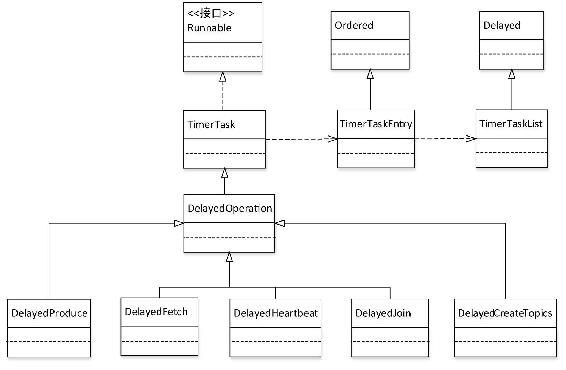
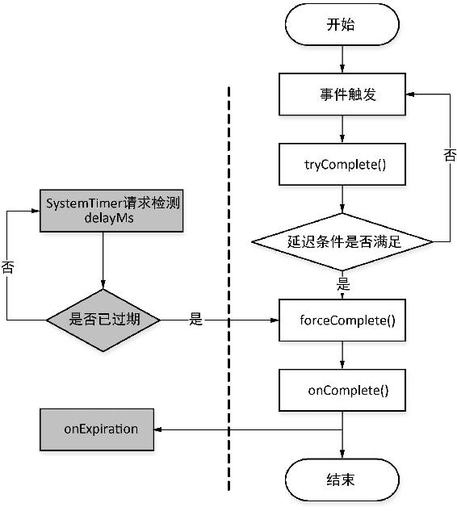

本节先简要介绍Kafka延迟操作的组件，该组件可以辅助Kafka其他组件完成相应的功能，如协助客户端处理创建主题操作、协助组协调器（GroupCoordinator）处理JoinGroupRequest和HeartbeatRequest请求、协助副本管理器（ReplicaManager）处理ProduceRequest和FetchRequest请求。因此在讲解Kafka其他组件之前，先介绍Kafka的延迟操作组件。
Kafka将一些不立即执行而要等待满足一定条件之后才触发完成的操作称为延迟操作，并将这类操作定义为一个抽象类DelayedOperation，DelayedOperation是一个基于事件启动有失效时间的TimerTask。TimerTask实现了Runnable接口，维护了一个TimerTaskEntry对象，TimerTaskEntry绑定了一个TimerTask，TimerTaskEntry被添加到TimerTaskList中，TimerTaskList是一个环形双向链表，按失效时间排序。
DelayedOperation是一个抽象类，具体的延迟操作类继承于该抽象类，分别用来协助相应组件对不同的请求完成延迟处理操作，类图如图3-1所示。
DelayedOperation只有一个AtomicBoolean类型的completed属性，用来控制某个延迟操作。在延迟时间（delayMs）内，onComplete()方法只被调用一次。DelayedOperation主要方法如下。

图3-1 DelayedOperation相关的类图
Kafka当前的设计onComplete()方法是向客户端做出响应的唯一出口，当延迟操作达到失效时间时也是先执行forceCompete()方法，让onComplete()方法执行之后再调用onExpiration()方法，在onExpiration()方法中仅是进行相应的过期信息收集之类的操作。DelayedOperation各方法在一个延迟周期内的调用关系如图3-2所示。

图3-2 DelayedOperation方法调用流程
DelayedOperationPurgatory是一个对DelayedOperation管理的辅助类，为了书写简便，我们将其简称为Purgatory。Purgatory以泛型的形式将一个DelayedOperation添加到其内部维护的Pool[Any, Watchers]类型watchersForKey对象中，同时将DelayedOperation添加到SystemTimer中。
其中，Watchers是Purgatory的内部类，底层是一个ConcurrentLinkedQueue，该类定义了一个ConcurrentLinkedQueue类型的operations属性，用于保存DelayedOperation。从Watchers类名可以看出，该类的作用就是对DelayedOperation进行监视。Watchers提供了以下3个对DelayedOperation操作的方法。
由此可见，Purgatory对DelayedOperation的管理是通过Watchers来完成的，通过Watchers调用DelayedOperation相应的方法，让DelayedOperation要么在delayMs时间内完成，要么超时。在对Purgatory有了基本了解之后，下面将逐一介绍DelayedOperation实现类的具体作用及实现细节。
我们从DelayedProduce的构造方法参数开始一步一步深入，对DelayedProduce的作用和实现细节进行讲解。
DelayedProduce(delayMs: Long,
produceMetadata: ProduceMetadata,
replicaManager: ReplicaManager,
responseCallback: Map[TopicPartition, PartitionResponse] => Unit)由构造方法的参数可知，DelayedProduce是协助ReplicaManager完成相应延迟操作的，而ReplicaManager的主要功能是负责将生产者发送的消息写入Leader副本、管理Follower副本与Leader副本之间的同步以及副本角色之间的转换，DelayedProduce显然是与生产者发送消息相关的延迟操作，因此只可能在消息写入Leader副本时需要DelayedProduce的协助。在ReplicaManager.appendMessages()方法中当ProduceRequest的acks为−1的情况下，创建了一个DelayedProduce对象。当生产者调用KafkaProducer.send()方法后，KafkaApis.handleProducerRequest()方法会调用ReplicaManager.appendMessages()方法将消息追加到相应分区的Leader副本之中。ProduceRequest的acks为−1，意味着生产者需要等待该分区的所有副本都与Leader副本同步之后才会进行下一条消息的发送。若要控制在分区各Follower副本与Leader副本同步完成后再向生产者应答，就要发挥DelayedProduce的作用了。
由以上分析可知，DelayedProduce的作用就是协助副本管理器在acks为−1的场景时，延迟回调responseCallback向生产者做出响应。具体表现在当消息追加到分区Leader副本之后，该分区各Follower副本完成了与Leader副本消息同步之后再回调responseCallback给生产者。
DelayedProduce继承DelayedOperation类，因此必须实现DelayedOperation类两个抽象方法。在分析DelayedProduce实现这两个抽象方法之前，我们对DelayedProduce构造方法的其他几个参数进行简单介绍。参数delayMs指延迟时间。参数produceMetadata是一个ProduceMetadata对象，记录了本次ProduceRequest的ack信息即produceRequiredAcks，以及对应分区对消息追加处理结果信息ProducePartitionStatus。ProducePartitionStatus对象包括本次追加消息的最大偏移量requiredOffset、分区处理结果PartitionResponse以及一个用于标识是否还在进行数据同步的Boolean类型的acksPending字段，当副本同步完成后此字段为false。PartitionResponse对象由处理的结果码errorCode、消息写入日志段的基准偏移量baseOffset和消息追加的时间戳timestamp组成。在初始化时，PartitionResponse.errorCode为Errors.REQUEST_TIMED_OUT.code。
DelayedProduce能够执行的条件及处理逻辑如下。
（1）写操作发生异常。更新该分区的ProducePartitionStatus.PartitionResponse.errorCode，同时更新acksPending=false。
（2）当分区Leader副本发生迁移时。此时也需要更新该分区的ProducePartitonStatus和acksPending=false。
（3）ISR副本同步完成，Leader副本的HW（HighWatermark，3.6节将进行介绍）已大于requiredOffset。通过Partition.checkEnoughReplicasReachOffset（status.requiredOffset）处理后会修改DelayedProduce初始化时对PartitionResponse.errorCode所设置的默认值。
DelayedProduce.tryComplete()方法检测DelayedProduce是否满足执行条件，DelayedProduce需要在本次请求对应的所有分区都满足条件之后才调用forceComplete()方法来完成延迟操作。
在3.1.1节已介绍过，延迟操作满足执行条件后需要执行的业务逻辑是由onComplete()方法处理，因此DelayedProduce的onComplete()方法就是回调respoonseCallback向客户端做出响应。
DelayedProduce是在ProduceRequest处理中对生产者发送消息的延迟操作，自然DelayedFetch就是在FetchRequest处理时进行的延迟操作。在Kafka中只有消费者或是Follower副本会发起FetchReuqest请求。FecthRequest是由KafkaApis.handleFetchRequest()方法处理的，在该方法中会调用ReplicaManager.fetchMessages()方法从相应分区的Leader副本拉取消息。在ReplicaManager.fetchMessages()方法中会创建DelayedFetch延迟操作。
DelayedFetch构造方法有一个fetchMetadata参数，该参数是一个FetchMetadata对象，该对象包括指定本次拉取操作获取数据的最小及最大字节数字段、是否只从Leader副本读取以及是否只读HW之前的数据的标志字段、一个用来标识是消费者还是Follower副本的replicaId字段、用来记录本次从每个分区拉取结果的fetchPartitionsStatus字段。从FetchMetadata对象的字段也可以看出之所以在拉取消息时需要延迟操作，是为了让本次拉取消息获取到足够的数据。
DelayedFetch若满足以下条件之一则表示可完成延迟操作执行。
（1）发生异常，Leader副本发生了迁移，当前的代理不再是Leader副本。
（2）发生异常，拉取消息的分区不存在。
（3）日志段发生了切割，请求拉取的消息偏移量已不在活跃段内，同时Leader副本没有处在限流处理的状态。
（4）累积拉取的消息数已超过了最小字节数限制。
与DelayedProduce一样，DelayedFetch也需要实现tryComplete()方法和onComplete()方法。DelayedFetch的tryComplete()也用于检测DelayedFetch是否满足执行条件，若满足执行条件就调用forceComplete()方法执行延迟操作。与DelayedProduce不同的是，DelayedFetch并不要求本次订阅的分区都满足执行条件后才最终执行。
DelayedFetch.onComplete()方法也是构造拉取返回结果回调responseCallback给客户端。
DelayedJoin是协助组协调器在消费组准备平衡操作时进行相应的处理。当消费组的状态转换为PreparingRebalance时，即准备进行平衡操作，在组协调器的prepareRebalance()方法中会创建一个DelayedJoin对象，并交由DelayedOperationPurgatory负责监视管理。
在消费组进行平衡操作时之所以需要DelayedJoin处理，是为了让组协调器等待当前消费组下所有的消费者都请求加入消费组，即发起了JoinGroupRequest请求。每次组协调器处理完JoinGroupRequest时都会检测DelayedJoin是否满足了完成执行的条件。
DelayedJoin相应方法的实现是调用GroupCoordinator相关方法来完成。DelayedJoin.tryComplete()调用的是GroupCoordinator.tryCompleteJoin()方法，该方法判断是否还有未申请加入消费组的消费者，若所有消费者均已申请加入消费组，则表示DelayedJoin满足了完成执行的条件，否则继续等待，直到满足执行条件或超时。而DelayedJoin.onComplete()方法调用的是GroupCoordinator.onCompleteJoin()方法，onCompleteJoin()方法的主要执行逻辑如下。
（1）若还有未加入消费组的成员，则将该成员相关信息从消费组列表中移除。
（2）若消费组的状态不为Dead（消费组的状态会在3.3节进行相应介绍），则先初始化与协调器对应的一个轮值标识generationId，然后根据该消费组下的成员列表是否为空分别做相应处理。若该消费组没有任何成员，则需要构造消息的Value为空的消费组相关元数据消息，即该消费组对应的元数据信息为空，这里是利用Kafka消息压缩清除的原理，当某消息的Value为空时则表示将要删除同Key的消息，组协调器通过这种方式将消费组相应数据从Kafka内部主题（“__consumer_offsets”）中清除。否则，遍历消费组下的每个成员构造JoinGroupResult，不过Leader消费者比Follower消费者多一个当前消费组的元数据信息字段。最后通过回调函数将JoinGroupResult发送给消费者，并对当前和下一次的心跳检测做相应处理。
（3）将第2步消费组元数据消息写入Kafka内部主题，即在第2步若消费组下已没有任何成员时，只是构造了一条与消费组元数据信息相关的消息，该消息的Value为空，这样当经由本步操作之后，会将该消费组在Kafka内部主题保存的消息删除。
DelayedJoin的功能及相应方法已介绍完毕，DelayedJoin.onExpiration()的方法也是调用GroupCoordinator.onExpireJoin()方法，不过该方法没有做任何实现。
DelayedHeartbeat用于协助消费者与组协调器心跳检测相关的延迟操作，DelayedHeartbeat相关功能的实现是调用GroupCoordinator的相应方法来完成的。下面分别介绍DelayedHeartbeat相应方法的具体实现。
DelayedHeartbeat.tryComplete()方法调用GroupCoordinator.tryCompleteHeartbeat()方法来检测是否满足执行条件，若满足以下条件之一则可触发执行。
（1）member.awaitingJoinCallback不为空。其中member是指MemberMetadata，Kafka将一个组协调器管理的成员元数据信息封装为一个MemberMetadata对象，成员的元数据信息包括心跳Session超时时间、上一次更新心跳的时间戳、成员所支持的协议（对于消费者是指分区分配策略），同时还包括组的状态信息等。awaitingJoinCallback不为空，则表示消费者已发出了JoinGroupRequest，现在正在等待组协调器返回JoinGroupResponse。
（2）member.awaitingSyncCallback不为空，表示正在进行SyncGroupRequest处理。
（3）上一次更新心跳的时间戳与member.sessionTimeoutMs之和大于heartbeatDeadline。
（4）消费者已离开消费组。
DelayedHeartbeat.onExpiration()方法调用的是GroupCoordinator.onExpireHeartbeat()方法，在该方法中检查tryComplete()方法执行条件的前3个条件是否都不满足，若均不满足时，则调用GroupCoordinator.onMemberFailure()方法进行处理。在onMemberFailure()方法中首先会调用GroupMetadata.remove()方法将该消费者从消费组中删除，然后根据GroupMetadata对应的消费组所处的状态进行相应处理。若消费组处于Dead或是Empty状态时，则不进行处理；若处于Stable或是AwaitingSync状态，则将状态切换为PreparingRebalance，准备进行平衡操作；若是处于PreparingRebalance状态，则检测由于消费组中的消费者减少是否满足了DelayedJoin执行条件尝试执行。
DelayedHeartbeat.onComplete()方法调用的是GroupCoordinator.onCompleteHeartbeat()方法，但该方法没有做任何处理。
在创建主题时，需要为主题的每个分区分配到Leader之后，才调用回调函数将创建主题结果返回给客户端。DelayedCreateTopics延迟操作等待该主题的所有分区副本分配到Leader或是等待超时后调用回调函数返回给客户端。